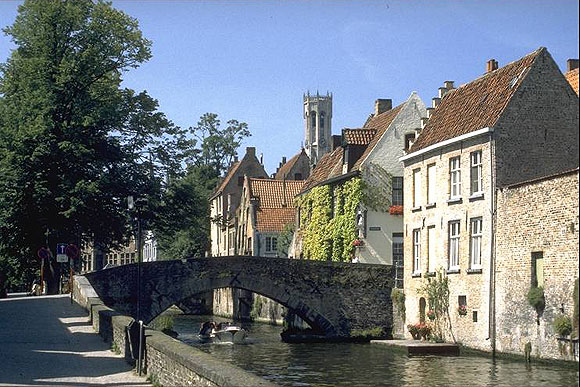

Retour à
l'index
BRUGES
Bruges compte
115.991 habitants. La ville se trouve en Flandre occidentale,
traversée
par le Zwijn, et qui au moyen âge était
le port le plus important de la mer du Nord. Le nom
de Bruges vient du norvégien ancien "Bryggja",
signifiant "quai" ou "port". Elle
est membre de l'Organisation du Patrimoine mondial,
depuis l'an 2000. Elle a été également la capitale
européenne de la culture
en 2002,
en même temps que la ville espagnole
de Salamanque. Elle est appelée «Venise du
Nord» car elle
possède
de nombreux canaux qui entourent ou traversent la ville. On trouve
encore des restes de forteresses (ainsi que des moulins) le long
des canaux du centre ville. Le style gothique
caractérise l'architecture de
cette ville. Les
Halles, la Mairie et l'église de Notre Dame sont
célèbres. La dentelle de Bruges, de
renommée mondiale,
est le produit par excellence de l'artisanat local.
Retour
à l'index